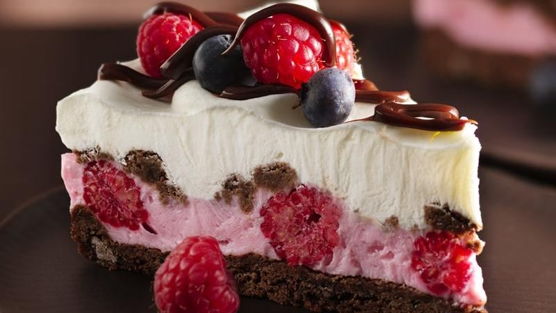

<!--
 Name:Neville Zou
 Student Id:
-->
<div class="pages">
<div data-page="projects" class="page no-toolbar no-navbar">
   <div class="page-content">
    <!--top header-->
      <div class="navbarpages">
         <div class="nav_left_logo"><a href="index.html"></a></div>
         <div class="nav_right_button">
			<!--A link to Open Main Nav-->
            <a href="menu.html"></a>
			<!--A link to go back to Previous Page-->
            <a href="food-menu.html"></a>
         </div>
      </div>
	   <!--top header-->
      <div id="pages_maincontent">
	  <!-- the header information of the page -->
         <h2 class="page_title">Our Recepie</h2><!-- heading tag-->
         <div class="post_single">
		 <!--Recipe Image And title-->
            <div class="featured_image">
               <!-- image tag for diplay image in browser-->
               <div class="post_title_single">
                  <h2>Chocolate and Berries Yogurt Dessert</h2>
               </div>
               <div class="post_social">
                  <a href="#" data-popup=".popup-social" class="open-popup"></a>              
               </div>
            </div>
		<!--Recipe Image And title-->
            <div class="page_content">
			  <!--Recipe Detail-->
               <div class="entry">
                  <p><!-- starts new paregraph-->
                     Dive into a frosty layered dessert with fudgy cookies, whipped fluffy yogurt, hot fudge sauce and fresh berries.
                  </p>
                  <ul class="simple_list"><!-- unorder list-->
                     <li> Heat oven to 350°F. In large bowl, stir cookie mix, oil, water and egg until soft dough forms.</li><!-- list Element-->
                     <li> On greased cookie sheet, drop dough by tablespoonfuls to make 6 cookies. Bake 8 to 11 minutes or until set. Cool 2 minutes, remove from cookie sheet to cooling rack.</li>
                     <li>Meanwhile, press remaining dough in bottom and 1 inch up sides of springform pan. Bake 8 to 10 minutes or until set. Cool completely, about 30 minutes.</li>
                     <li> In medium bowl, fold 1/2 cup raspberries into yogurt; spread evenly over crust. Crumble cookies; sprinkle over yogurt mixture. Carefully spread whipped cream evenly over cookie crumbs. Freeze 4 to 5 hours or until firm. Remove sides of pan.</li>
                     <li> Drizzle 1 tablespoon fudge topping over dessert. Top with blueberries and remaining raspberries. Drizzle with remaining fudge topping. Store in freezer.</li>
                  </ul>
               </div>
			     <!--Recipe Detail-->
            </div>
         </div>
      </div>
   </div>
</div>